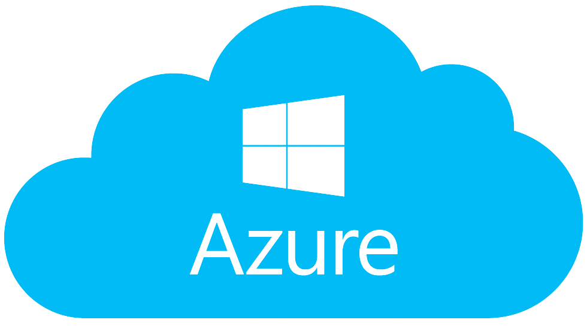

Cloud Vendor Comparison

Google Cloud Platform
Google Cloud offers a variety of tools and services for building, deploying, and scaling
applications.
Main Features:
- BigQuery: A highly scalable, serverless data warehouse designed for fast SQL
queries and real-time data analytics.
- Google Kubernetes Engine (GKE): Managed Kubernetes clusters for deploying,
managing, and scaling containerized applications.
- AI and Machine Learning: Offers pre-trained models and tools for creating
custom machine learning models, including AutoML and TensorFlow.
Learn more about Google Cloud
services
Oracle Cloud Infrastructure
Oracle Cloud provides integrated solutions for computing, storage, and networking with enterprise-grade
performance.
Main Features:
- Autonomous Database: Fully automated database management, patching, and tuning with
self-repairing capabilities.
- High-Performance Computing (HPC): Offers high-speed, low-latency networking and massive
scalability for complex workloads like simulations and machine learning.
- Oracle Cloud VMware Solution: Allows enterprises to run VMware workloads natively on
Oracle Cloud without re-architecting existing applications.
Learn more
about Oracle Cloud services
.png)
Amazon Web Services (AWS)
AWS provides a robust set of cloud services for compute power, storage, databases, and machine learning.
Main Features:
- Elastic Compute Cloud (EC2): Provides scalable virtual servers with a wide range of
instance types for different computing needs.
- Amazon S3: A scalable object storage service designed for data backup, archiving, and
big data analytics.
- Lambda: A serverless compute service that allows you to run code without provisioning
or managing servers.
Learn more about AWS services

Microsoft Azure
Azure provides a wide variety of cloud computing services, including virtual machines, databases, and AI
solutions.
Main Features:
- Virtual Machines: Create scalable Windows or Linux virtual machines in seconds and only
pay for what you use.
- Azure DevOps: Provides a suite of development tools for continuous integration and
continuous deployment (CI/CD) pipelines
- Azure AI:: Offers AI and machine learning tools, including pre-built models and support
for building custom solutions using Azure Machine Learning.
Learn more about Azure services

Firebase
Firebase is Google's app development platform that provides backend services like authentication and
real-time databases.
Main Features:
- Authentication: Easily integrate secure sign-in with options like Google, Facebook, and
email/password authentication.
- Cloud Firestore: A flexible, scalable NoSQL cloud database for mobile and web apps that
syncs in real-time.
- Firebase Hosting: Offers AI and machine learning tools, including pre-built models and
support
for building custom solutions using Azure Machine Learning.
Learn more about Firebase services